14 Geoms
14.1 Resources
14.2 Introduction
The geometric layers that make up the data aspects of a plot are typically added through a geom that may be altered by position and stat, or statistical transformation if necessary. Each geom necessitates certain aesthetics, particularly positional aesthetics. Other aesthetics can be added to map variables to the plot or to alter the visual representation of the geoms.
- geom: Geometric object drawn on a plot to represent data.
- stat: The statistical transformations applied to the data.
- position: Adjustments to position of geoms to resolve overlapping.
There is usually a one-to-one relationship between geoms and stats: geoms are created through specific statistical transformations. The relationship between geom_bar() and stat_count() as discussed in Section 14.3.1 is a particularly simple and clear example. Geoms, stats, and positions all have their functional forms (geom_*(), stat_*(), and position_*()) as well as their form as a string without the functional prefix (geom = "point", stat = "identity", position = "stack"). The relationship between these three aspects of a geometric layer is discussed in some length in Section 14.3. Otherwise the relationship between geoms and stats are noted throughout. An overview of the possible position adjustments is in Section 14.9
The documentation for each geom provides the aesthetics that can be used with it. See Chapter 16 for an overview of aesthetics.
14.3 Bar plots
14.3.1 Geoms and stats
geom_bar() is a good place to start with geoms because it is easy to show the relationship between geoms, stats, and position.
geom_bar()
By default geom_bar() performs a statistical transformation by counting the number of observations in the variable provided in the single positional aesthetic: x for upright bar plot, y for horizontal bar plot. Therefore, you can create a bar plot with either geom_bar() or stat_count(geom = "bar"):
penguins |>
ggplot(aes(x = species)) +
geom_bar()
penguins |>
ggplot(aes(x = species)) +
stat_count(geom = "bar")
stat_identity()
Instead of using the default count stat, you can use stat_identity() which gets the height of the bars directly from the data. stat_identity() requires both x and y positional aesthetics because it needs to know which variable to use for the height of the bar.
penguins |>
count(species) |>
ggplot(aes(x = species,
y = n)) +
geom_bar(stat = "identity")
penguins |>
count(species) |>
ggplot(aes(x = species,
y = n)) +
stat_identity(geom = "bar")
geom_col()
geom_col() provides a shortcut for creating a bar plot using stat_identity(). The height of the bar is scaled to the y aesthetic, which does not need to be a count.

14.3.2 Aesthetics
Add color to the geom with either color or fill aesthetics. As with other polygon geoms, fill provides the color for the area of the geom and color affects the outline of the polygon.
# Fill
penguins |>
ggplot(aes(x = species)) +
geom_bar(aes(fill = species))
# Color
penguins |>
ggplot(aes(x = species)) +
geom_bar(aes(color = species))14.3.3 Position
Each geom has a position argument that takes either "identity", "stack", "dodge", "dodge2", or "fill", or, alternatively, the corresponding position_*() functions that allow more freedom in tweaking aspects of the position. See Section 14.9 for an overview.
The default position for geom_bar() is position_stack(). This can be seen by mapping color or fill to a non-positional variable. With position_stack() each group is stacked on top of each other.
position_identity() is the default for most geoms, but it does not work well with bar plots. Compare the default position_stack() to position_identity() in which each group starts from 0. Note the difference in the limit of the y-axis.
# Default stack position
penguins |>
ggplot(aes(x = island,
color = species)) +
geom_bar(fill = NA)
# Position identity
penguins |>
ggplot(aes(x = island,
color = species)) +
geom_bar(fill = NA,
position = "identity")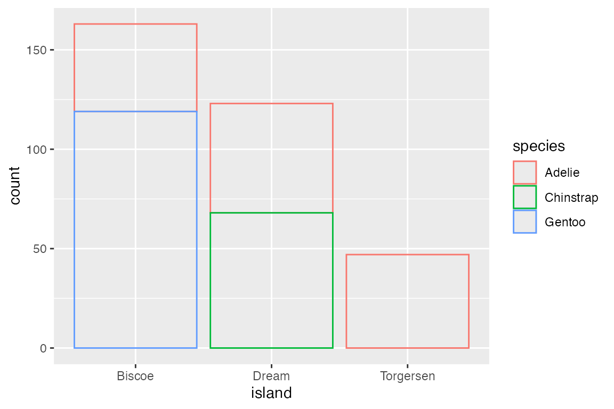
A more useful positional adjustment with bar plots is to "dodge" the groups, placing them alongside each other instead of stacking them on top of each other. position_dodge2() provides space between the two groups. Note that using the position_*() function makes it possible to better control the behavior such as maintaining the same width for all bars.
penguins |>
ggplot(aes(x = island,
fill = species)) +
geom_bar(position = "dodge")
penguins |>
ggplot(aes(x = island,
fill = species)) +
geom_bar(position = position_dodge2(
preserve = "single"))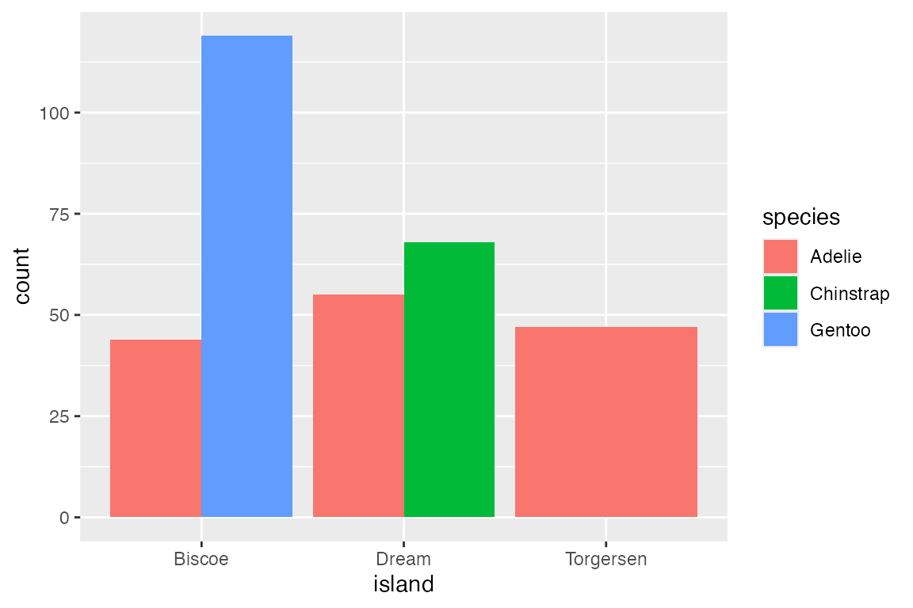
Finally, position_fill() standardizes the height of the bars to create a ratio or relative frequency plot.
14.4 Continuous distributions
Like geom_bar(), geoms that visualize continuous distributions count the frequency of data and therefore only needs one positional aesthetic. However, because the data is continuous it needs to be placed into bins before being counted.
Geoms
14.4.1 Histograms and frequency polygons
geom_histogram() and geom_freqpoly() use stat_bin() to count frequency. The nature of the visualization is determined by the width of the bins with these geoms. This can be changed with either bins (number of bins) or binwidth (width of bins in scale).
# binwidth
penguins |>
ggplot(aes(x = body_mass_g)) +
geom_histogram(binwidth = 200)
# bins
penguins |>
ggplot(aes(x = body_mass_g)) +
geom_histogram(bins = 50)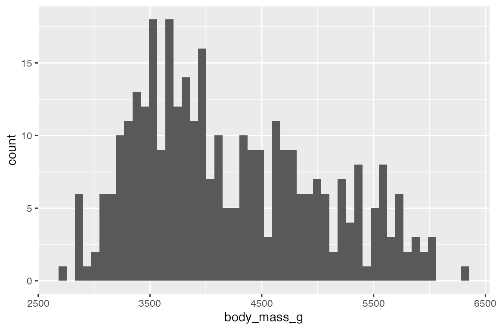
geom_freqpoly() displays the same counts with lines instead of bars.
# binwidth
penguins |>
ggplot(aes(x = body_mass_g)) +
geom_freqpoly(binwidth = 200)
# bins
penguins |>
ggplot(aes(x = body_mass_g)) +
geom_freqpoly(bins = 50)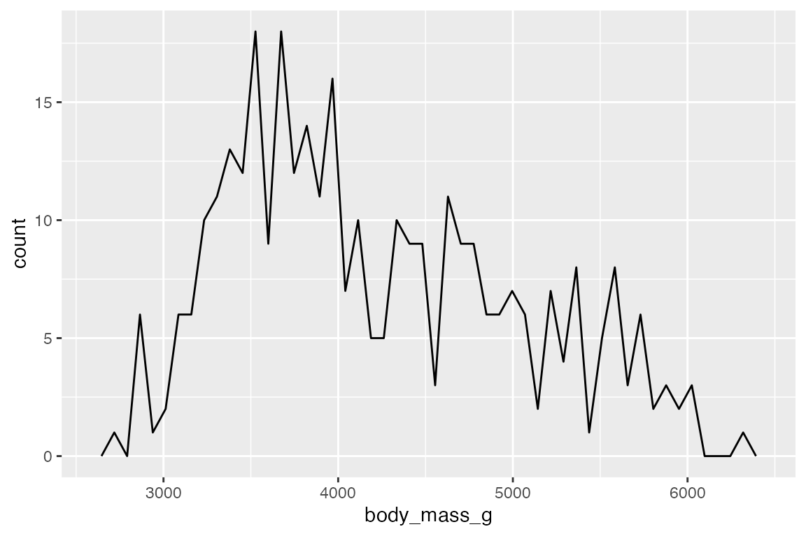
Add color or fill to group the frequency plots.
# binwidth
penguins |>
ggplot(aes(x = body_mass_g,
fill = species)) +
geom_histogram(binwidth = 200)
# bins
penguins |>
ggplot(aes(x = body_mass_g,
color = species)) +
geom_freqpoly(binwidth = 200)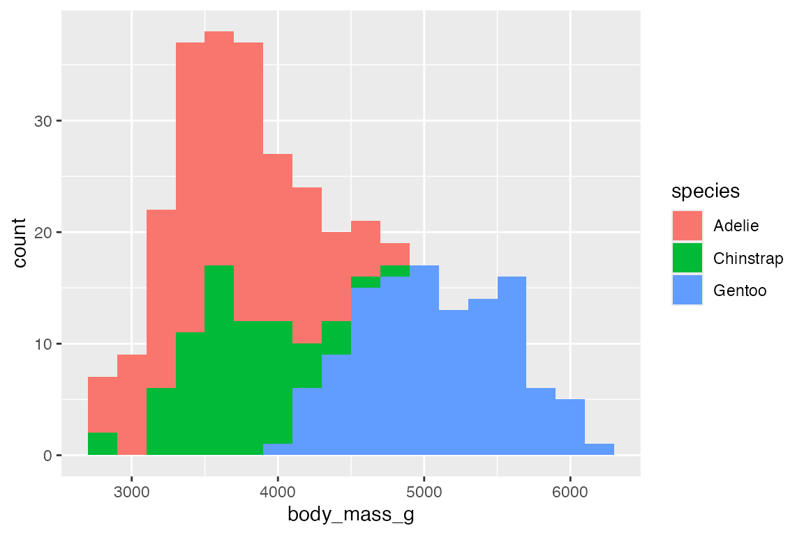
14.4.2 Density estimates
geom_density() provides another way to group continuous data, but it does so by smoothing out the frequency plots. The area of each density is standardized to one so that you lose information about the relative size of each group. Note that the y-axis is density not count.
penguins |>
ggplot(aes(x = body_mass_g, color = species, fill = species)) +
geom_density(alpha = 0.5) +
scale_y_continuous(labels = scales::label_number())The ggridges package makes it easy to do what are essentially faceted density plots
library(ggridges)
penguins |>
ggplot(aes(x = body_mass_g, y = species, color = species, fill = species)) +
geom_density_ridges(alpha = 0.5, show.legend = FALSE)
#> Picking joint bandwidth of 15314.4.3 Dot plots
Another way to represent a binned continuous data is with a dot plot in which dots representing one observation are stacked. geom_dotplot() has two different methods for binning: "dotdensity" and "histodot". "histodot" uses fixed-width bins, whereas "dotdensity", the default, calculates binwidth based on the data.
penguins |>
ggplot(aes(x = body_mass_g)) +
geom_dotplot(binwidth = 100)The labels used on the y-axis are not meaningful with geom_dotplot(). You can either hide the y-axis or manually scale it.
geom_dotplot() works differently in stacking groups. It has a stackgroups argument and this goes together with the method to use for binning and whether binpositions should be calculated "bygroup" or for "all" the data.
Without stacking you can see that each group has its own binning position by default.
penguins |>
ggplot(aes(x = body_mass_g, fill = species)) +
geom_dotplot(binwidth = 100,
alpha = 0.7)
There are two slightly different ways to stack the dots with either method = "histodot" or binpositions = "all":
# method = "histodot"
penguins |>
ggplot(aes(x = body_mass_g,
fill = species)) +
geom_dotplot(binwidth = 100,
stackgroups = TRUE,
method = "histodot")
# binpositions = "all"
penguins |>
ggplot(aes(x = body_mass_g,
fill = species)) +
geom_dotplot(binwidth = 100,
stackgroups = TRUE,
binpositions = "all")Mapping an x and y aesthetic makes it possible to create a beeswarm plot with occurrences stacking from the center and bins on the y-axis.
penguins |>
ggplot(aes(x = species, y = body_mass_g, fill = species)) +
geom_dotplot(binwidth = 100,
binaxis = "y",
stackdir = "center",
binpositions = "all")14.5 Statistical distributions
There are a variety of geoms intended to show the statistical distribution of a variable in the data.
Geoms
14.5.1 geom_boxplot()
A box plot displays the distribution of a continuous variable, showing the median, 25th, and 75th percentile, whiskers to farthest non-outlier point, and outliers.
penguins |>
ggplot(aes(x = species, y = body_mass_g)) +
geom_boxplot()The orientation of the plot follows the discrete axis.
penguins |>
ggplot(aes(x = body_mass_g, y = species)) +
geom_boxplot()Box plots are automatically dodged when any aesthetic is a factor. By default, geom_boxplot() uses position_dodge2() to add space between the boxes.
penguins |>
ggplot(aes(x = species, y = body_mass_g, fill = sex)) +
geom_boxplot()geom_jitter() is particularly useful with geom_boxplot() to show the actual points. geom_jitter() is a shortcut for geom_point(position = "jitter"). Control the width and height of the jitter with the corresponding arguments. geom_jitter() also has a position argument in case you want to make further changes. For instance, with a dodged box plot you need to use position = position_jitterdodge(). Finally, when adding the points with geom_jitter(), the outlier points from geom_boxplot() should be removed with outlier.shape = NA.
penguins |>
ggplot(aes(x = species, y = body_mass_g, color = sex)) +
geom_boxplot(outlier.shape = NA) +
geom_jitter(alpha = 0.8,
position = position_jitterdodge())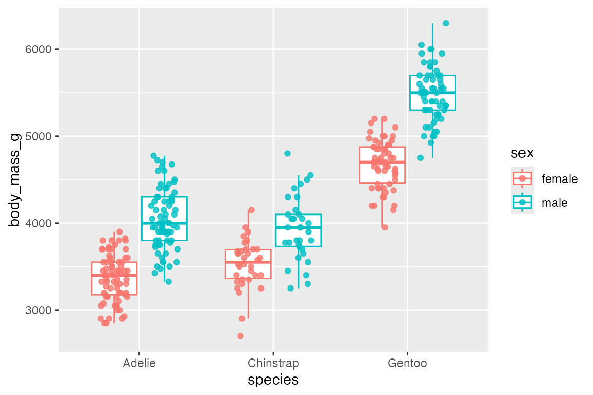
It is possible to use a boxplot with a continuous variable by binning the data with one of the helper functions: cut_width(), cut_interval(), or cut_number().
penguins |>
ggplot(aes(x = bill_depth_mm, body_mass_g)) +
geom_boxplot(aes(group = cut_width(bill_depth_mm, 1)))
14.5.2 geom_violin()
geom_violin() is similar to geom_boxplot() but it adds a density measurement. geom_violin() behaves very similarly to geom_boxplot() but it does not show statistical quantiles.
penguins |>
ggplot(aes(x = species, y = body_mass_g)) +
geom_violin()To show the quantiles use the draw_quantiles argument with a vector of quantiles to draw.
penguins |>
ggplot(aes(x = species, y = body_mass_g)) +
geom_violin(draw_quantiles = c(0.25, 0.5, 0.75))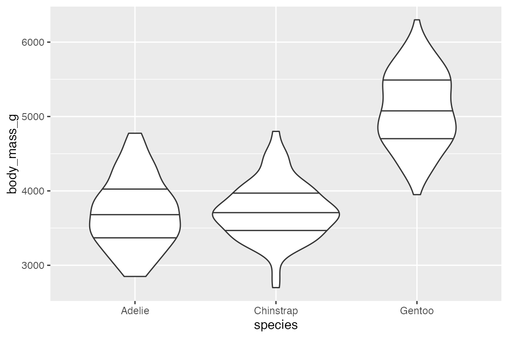
Like box plots, geom_violin() automatically dodges when any aesthetic is a factor.
penguins |>
ggplot(aes(x = species, y = body_mass_g, fill = sex)) +
geom_violin()And geom_violin() works well with geom_jitter().
penguins |>
ggplot(aes(x = species, y = body_mass_g)) +
geom_violin() +
geom_jitter(aes(color = sex),
width = 0.25, height = 0,
alpha = 0.6)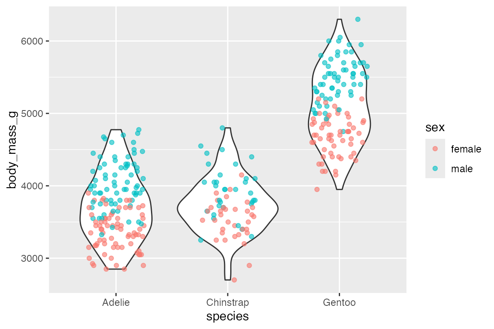
14.5.3 geom_linerange() and geom_pointrange()
Another way to show statistical aspects of data is with either a line or point range that draws a vertical line from ymin to ymax. There needs to be variables in the data with ymin and ymax data for each group. This is done by grouping the data and then mutating:
geom_pointrange() is the same as geom_linerange() but it adds the points along the line.
penguins_range |>
ggplot(aes(x = species,
y = body_mass_g)) +
geom_linerange(aes(ymin = lower,
ymax = upper))
penguins_range |>
ggplot(aes(x = species,
y = body_mass_g)) +
geom_pointrange(aes(ymin = lower,
ymax = upper))In this case, it is probably more useful to put points at specific statistical quantiles by calculating these and using geom_point().
penguins |>
group_by(species) |>
mutate(lower = min(body_mass_g),
upper = max(body_mass_g),
med = median(body_mass_g)) |>
ggplot(aes(x = species,
y = body_mass_g)) +
geom_linerange(aes(ymin = lower,
ymax = upper)) +
geom_point(aes(x = species, y = med))Or, you can recreate this plot more easily with stat_summary():
penguins |>
ggplot(aes(x = species,
y = body_mass_g)) +
stat_summary(fun = median, fun.min = min, fun.max = max)One useful point to note is that you can, of course, place a numeric value in either ymin or ymax such as beginning the line at 0.
penguins_range |>
ggplot(aes(x = species,
y = body_mass_g)) +
geom_linerange(aes(ymin = 0,
ymax = upper)) +
geom_point(aes(y = upper), size = 4)14.6 Scatter plots
Scatter plots are best used to display the relationship between two continuous variables.
Geoms
14.6.1 geom_point()
penguins |>
ggplot(aes(x = flipper_length_mm,
y = body_mass_g,
color = species_sex)) +
geom_point()A complementary geom to go along with geom_point() is geom_rug(), which creates a compact visualizations of observations along the x- and y-axis of a plot. The documentation notes that it is best used with smaller data sets.
penguins |>
ggplot(aes(x = flipper_length_mm,
y = body_mass_g,
color = species_sex)) +
geom_point() +
geom_rug()The above plot shows one of the potential issues with geom_rug() in that many observations occur at the same x or y value. You can see that this is particularly true for flipper length where the scale of the variable is much smaller. You can choose where to place geom_rug() and thus which axes to measure with the sides argument that takes a string containing any of "trbl", for top, right, bottom, and left.
penguins |>
ggplot(aes(x = flipper_length_mm,
y = body_mass_g,
color = species_sex)) +
geom_point() +
geom_rug(sides = "l")14.6.2 Overplotting
The easiest way to deal with overplotting, having multiple points drawn in the same or nearly the same place, is to use transparency. The more overplotting there is the lower the transparency can be.
penguins |>
ggplot(aes(x = flipper_length_mm,
y = body_mass_g)) +
geom_point(alpha = 0.5)The use of geom_jitter() has already been shown in Section 14.5.1 for spreading out points along a discrete variable, but it can also be helpful if there are multiple points at specific coordinates.
penguins |>
ggplot(aes(x = species_sex,
y = body_mass_g)) +
geom_point()
penguins |>
ggplot(aes(x = species_sex,
y = body_mass_g)) +
geom_jitter(width = 0.2, height = 0)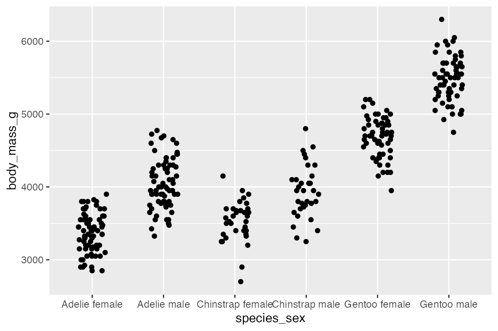
ggplot2 also includes a number of geoms to deal with overplotting. The most specific is geom_count(), which counts the number of observations at each location, then maps the count to point area. geom_count() is a shortcut for geom_point(stat = "sum"). This can be used with two continuous variables, but the documentation specifically notes that it is most useful with discrete data.
# Continuous x continuous
penguins |>
ggplot(aes(x = flipper_length_mm,
y = body_mass_g)) +
geom_count(alpha = 0.8)
# Discrete x continuous
penguins |>
ggplot(aes(x = species_sex,
y = body_mass_g)) +
geom_count(alpha = 0.8)Adding an aesthetic that maps to a factor creates groups for the sum statistical transformation. Compare the scales with and without color.
penguins |>
ggplot(aes(x = species,
y = body_mass_g)
) +
geom_count(alpha = 0.8)
penguins |>
ggplot(aes(x = species,
y = body_mass_g,
color = sex)) +
geom_count(alpha = 0.8)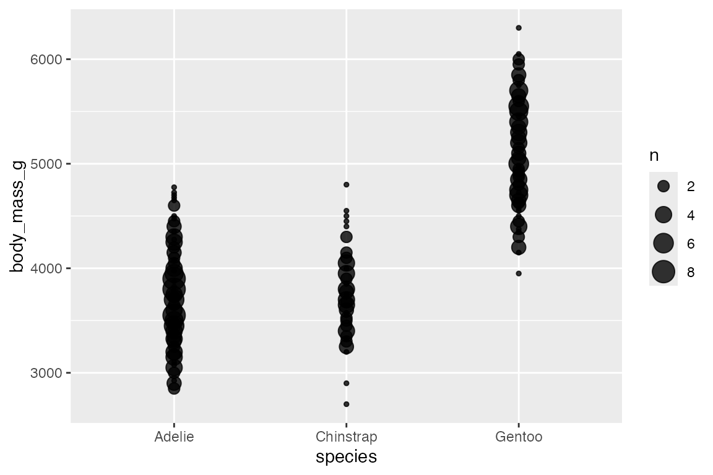
14.6.3 Heat maps
Another way to deal with overplotting is to create heat maps with either geom_bin2d() or geom_hex(). geom_bin2d() creates rectangular bins; geom_hex() creates hexagonal bins. Like other binning geoms such as geom_histogram(), see Section 14.4.1, the heat map geoms have arguments for number of bins and binwidth. One difference is that binwidth takes a numeric vector of length 2 for vertical and horizontal size of the bins.
penguins |>
ggplot(aes(x = flipper_length_mm,
y = body_mass_g)) +
geom_bin2d()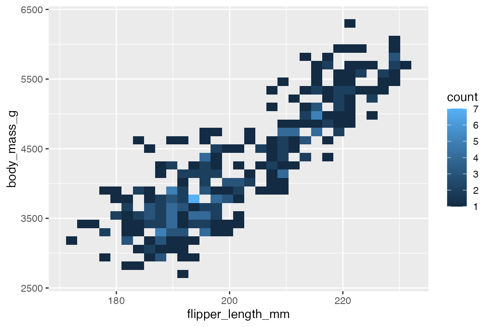

Both geoms map a continuous color scale to counts within the bin. Thus, using color or fill to map another aesthetic is not really useful here except for showing presence and absence.

14.6.4 Contours
Another way to deal with overplotting and to visualize density along two continuous variables is with contour plots that are a 2D version of geom_density(), see Section 14.4.2.
-
geom_density_2d(): draw contour lines -
geom_density_2d_filled(): draw filled contour bands
penguins |>
ggplot(aes(x = flipper_length_mm,
y = body_mass_g)) +
geom_density2d_filled() +
geom_density2d() +
geom_point(alpha = 0.4)If you map an aesthetic to a categorical variable, you will get a set of contours for each group.
penguins |>
ggplot(aes(x = flipper_length_mm,
y = body_mass_g)) +
geom_density2d(aes(color = species))Using geom_density2d_filled() with multiple groups does not work well, and so it seems best to use facets. You can change the way that the contour is created across the facets with contour_var choosing one of "density", "ndensity", or "count".
-
"density"uses the same scale across the facets. -
"ndensity"keeps the peak intensity stable across the facets. -
"count"scales by the number of observations.
penguins |>
ggplot(aes(x = flipper_length_mm,
y = body_mass_g)) +
geom_density2d_filled() +
facet_wrap(vars(species)) +
scale_x_continuous(breaks = c(180, 200, 220))You can also use stat_density2d() to use the density2d statistical transformation with a different geom such as raster to create density tiles instead of contours.
penguins |>
ggplot(aes(x = flipper_length_mm,
y = body_mass_g)) +
stat_density2d(
geom = "raster",
aes(fill = after_stat(density)),
contour = FALSE) +
scale_fill_viridis_c()14.7 Lines
14.7.1 Line plots
ggplot2 has three main geoms to draw lines to connect observations:
-
geom_line(): Connect observations in order of the variable on thexaxis. -
geom_path(): Connects the observations in the order in which they appear in the data. -
geom_step(): Creates a stairstep plot, changes inyare at 90 degree angles, highlighting exactly when changes occur.
Line data: mean body mass per year
The group aesthetic determines which cases are connected together. Thus, when you want to draw multiple lines in a plot, you need to use group or another aesthetic such as color or linetype to create the groups, see Section 16.8. The difference between geom_line() and geom_path() can be shown by not including a group aesthetic. When you see a plot like the first one, you know that you are missing a group aesthetic.
penguins_line |>
ggplot(aes(x = year,
y = body_mass_g)) +
geom_line()
penguins_line |>
ggplot(aes(x = year,
y = body_mass_g)) +
geom_path()Mapping a color or linetype aesthetic creates the correct grouping.
penguins_line |>
ggplot(aes(
x = year,
y = body_mass_g,
color = species_sex)) +
geom_line(linewidth = 1.5)
penguins_line |>
ggplot(aes(
x = year,
y = body_mass_g,
linetype = species_sex)) +
geom_line(linewidth = 1.5)geom_step() is good for highlighting exactly when changes occur, for instance with financial data where credits and debits are made on specific days, not over a continuous period or at a constant pace. It is thus good for more discrete forms of time data. Think of the difference between accounting data vs stock market prices taken at regular intervals of days or even hours. For the penguin data using geom_step() highlights that the data was collected at three specific point (at least according to the data we have) and does not represent continuous data over time. The changes can be further highlighted by adding points.
penguins_line |>
ggplot(aes(x = year,
y = body_mass_g,
color = species_sex)) +
geom_step() +
geom_point()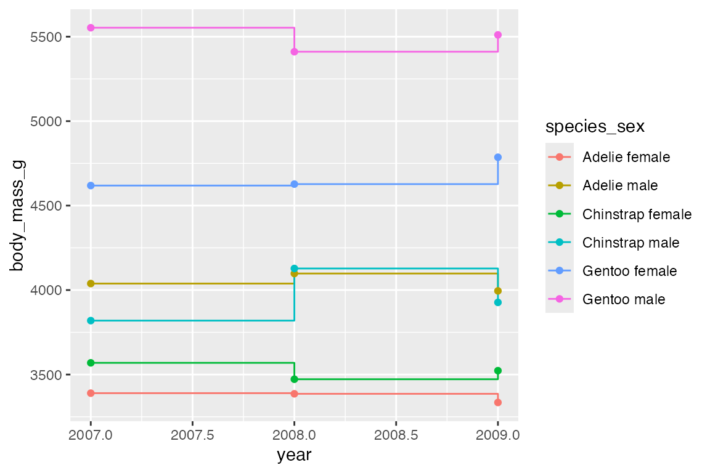
14.7.2 Line segments and curves
geom_segment() and geom_curve() provide means to draw straight and curved lines with data. These geoms are often used as annotations to a plot and are similar to using segment and curve geom in annotate(), see Section 15.5.2. They differ in that they need data from a data frame. The geoms use the positional aesthetics of x, y, xend, and yend. geom_curve() has arguments for curvature and angle to specify the curve. See grid::curveGrob() for more control on the details of the curve.
# Data frame for where to begin and end segment and curve
df <- data.frame(x1 = 184, x2 = 209, y1 = 4650, y2 = 5500)
penguins |>
ggplot(aes(x = flipper_length_mm,
y = body_mass_g)) +
geom_point() +
geom_curve(data = df,
aes(x = x1, y = y1,
xend = x2, yend = y2,
color = "curve"),
curvature = -0.5) +
geom_segment(data = df,
aes(x = x1, y = y1,
xend = x2, yend = y2,
color = "segment")) +
labs(color = "Geom type")14.7.3 Reference lines
Reference line geoms draw horizontal (geom_hline()), vertical (geom_vline()), or angled (geom_abline()) lines across the plot panel. These geoms are drawn using geom_line() so they support the same aesthetics: alpha, color, linetype, and linewidth. The arguments for the geoms are very simple, and the placement aesthetics are usually provided manually instead of in the data. If you want the lines to vary across facets, you need to construct a data frame and then use them within aesthetics.
-
geom_vline():xintercept -
geom_hline():yintercept -
geom_abline():slopeandintercept-
intercept: Where line intercepts x-axis. -
slope: Slope of the line
-
penguins |>
ggplot(aes(x = flipper_length_mm,
y = body_mass_g)) +
geom_vline(xintercept = median(penguins$flipper_length_mm),
color = "orchid",
linewidth = 1.5) +
geom_hline(yintercept = median(penguins$body_mass_g),
color = "tomato",
linewidth = 1.5) +
geom_abline(intercept = 0, slope = 20,
color = "slateblue",
linewidth = 1.5) +
geom_point(alpha = 0.5)14.8 Ribbons and areas
geom_ribbon() is similar to geom_line but it creates a polygon between a ymin and a ymax. geom_area() is a special case of geom_ribbon(), where the ymin is fixed to 0 and y is used instead of ymax.
A simple example is to subtract from and add to the y variable to create a buffer around geom_line(). You could calculate quantiles to do this, though using geom_smooth() would be better.
penguins_line |>
ggplot(aes(x = year,
y = body_mass_g,
group = species_sex)) +
geom_ribbon(aes(ymin = body_mass_g - 50,
ymax = body_mass_g + 50),
fill = "gray80") +
geom_line(aes(color = species_sex))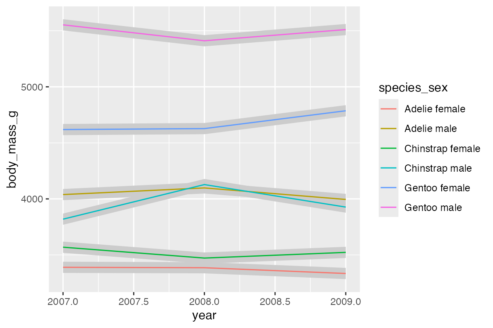
By default, geom_area() uses position = "stack" with a special stat (stat_align()) to align the values so that they can be stacked when groups overlap on the x-axis. Thus, with the penguin_line data the areas just stack on top of each other, creating a measure of the total weight of penguins with heights of the areas representing the ratio of weight per species_sex. Note the very different scale on the y-axis.
Using position = "identity" places one polygon over another.
14.9 Positions
All geoms have a position adjustment argument that resolves overlapping geoms. Override the default by using the position argument in the geom_*() or stat_*() function. The argument can either be one of the below functions or a string without the position_ prefix. See in particular Section 14.3.3 for examples.
-
position_identity(): Do not adjust position -
position_dodge(): Dodge overlapping objects side-to-side; useful withgeom_bar(). -
position_dodge2(): Dodge overlapping objects side-to-side with a gap; used withgeom_boxplot(). -
position_jitter(): Add randomwidthandheightadjustments to data; default forgeom_jitter(). -
position_jitterdodge(): Dodge and jitter; primarily useful for jittering points within dodged box plots. -
position_nudge(): Add manual adjustments toxory; built intogeom_text()to move labels away from points. -
position_stack(): Stacks bars on top of each other; default ingeom_bar()to stack groups within a discrete variable. -
position_fill(): Stacks bars and standardizes each stack to have constant height to show ratios.